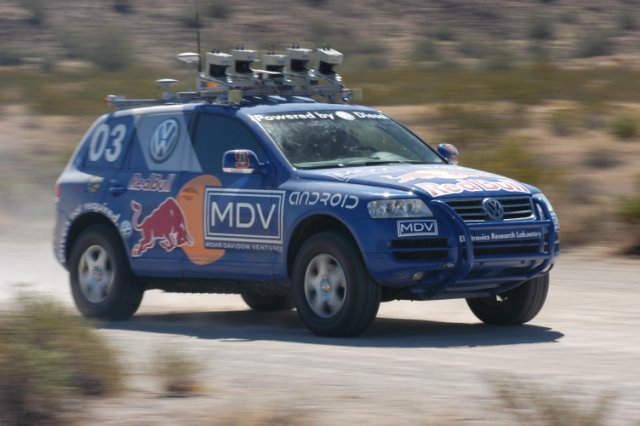

Competition spurs innovation like nothing else. It appears that a new golden age of engineering and science competition is upon us, with substantial monetary prizes going to the victors.
If necessity is the mother of invention, then competition must be the mother of innovation. The motivational power of monetary prizes in engineering competition is well proven, just look at the aerodynamic innovation in Formula 1 racing from 1967-2007 as an example.
Stanley in the 2005 DARPA Grand ChallengeOfficial press photo released by the VW Press Department


 Get our Blog feed
Get our Blog feed